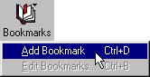
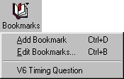

4.1 Adding Bookmarks
Normally, you would add bookmarks in your browser. Since PFFCD creates HTML pages
on-the-fly and deletes them when they are no longer needed, it makes no sense
adding a bookmark to PFFCD-threads in your browser, since it's highly unlikely the page
will still be available by the time you wish to recall it. Therefore PFFCD has its own
bookmark system and bookmarks to threads are set in PFFCD itself.
To add a bookmark, first highlight a thread by clicking on it in the Threads View Window.
Once it's highlighted, you can either press Ctrl-D, or click the Bookmark button
and choose "Add Bookmark":

Once a bookmark has been added, it will appear at the bottom of the Bookmark Menu:
